6. Notepad++¶
| Author: | MUHAMMAD TARMIZI BIN KAMARUDDIN (002321867-D) / mtbink.com / @mtbinkdotcom |
|---|
6.1. Special setup¶
Edit (menu bar) and tick the following:
- > Clipboard history
- > Character panel
View (menu bar) and tick the following:
- > Show symbol > Show White Space and TAB
- > Word wrap
- > Document Map
- > Function List
Language (menu bar):
Settings (menu bar):
> Preferences... and update the following:
> General:
- > Document List Panel > and tick Show
- > Tab Bar > and tick Hide
> Editing:
- > Multi-Editing Settings > and tick Enable (Ctrl+Mouse click/selection)
- > Vertical Edge Settings:
- Tick Show Vertical Edge and choose Line mode
- Number of columns set to 80
- Tick Enable smooth font
> Default Directory:
- > Default Directory (Open/Save) > and choose Remember last used directory
- Tick Use new style save dialog (without file extension feature)
> Recent Files History:
- > Display > and tick In Submenu
> Language Menu:
> Language Menu > Available items
I only use these:
- Normal Text
- PHP
- Java
- HTML
- XML
- Batch
- INI file
- ASP
- Visual Basic
- JavaScript
- CSS
- Python
- Lua
- TeX
- Scheme
- AutoIt
- Inno Setup
- YAML
- CoffeeScript
- JSON
- JavaScript (Yes, it is twice appearing)
All others move it to the Disabled items
> Tab Settings:
- > Tab Settings > and tick Replace by space
> Auto-Completion:
- > Auto-Insert > and untick everything
> MISC.:
- > Clickable Link Settings > and untick Enable
- > Highlight Matching Tags> and tick Highlight comment/php/asp zone
- Session file ext. set to nses
> Style Configurator... and update the following:
- > Global Styles : Global override:
- > Font Style > Font Name > and choose Hack
- Tick Enable global font
- > Global Styles : Global override:
Run (menu bar):
Run Command Prompt against current active file:
Run > Run... >
cmd /c "$(FULL_CURRENT_PATH)"> Save...: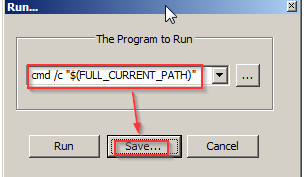
CMD> CTRL >F5> OK: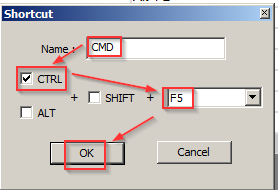
Now, just press
Ctrl + F5everytime you need to run Command Prompt against current active file.Note that the file must be saved first.
Plugins (menu bar):
- Uninstall plugin(s):
- Plugins > Plugin Manager > Show Plugin Manager > Installed then
tick the following:
- Converter
- NppExport
- Click Remove.
- Plugins > Plugin Manager > Show Plugin Manager > Installed then
tick the following:
- Need to reinstall Notepad++ plugin
- Uninstall plugin(s):
6.2. Why I do not use these styles ?¶
Default
White background, already bored looking at VBA
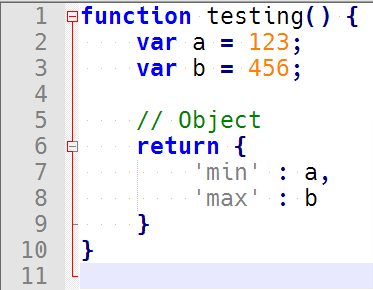
Bespin
Bracket matching is not prominent at all.
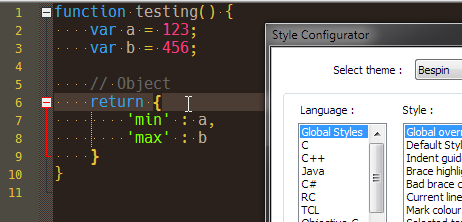
Black board
Highlighted variable is not prominent.
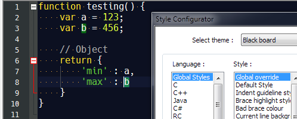
Choco
The colouring is almost like Bespin, but the currently selected text range is not prominent at all; here I highlight from
4...to...Objeactually: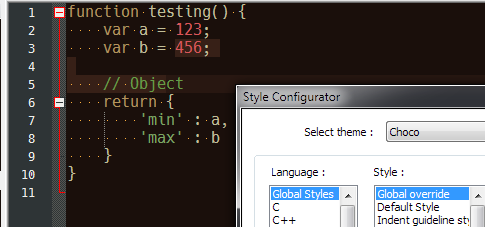
Hello Kitty
Too pinkish.
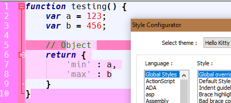
HotFudgeSundae
Highlighted variable is not prominent.
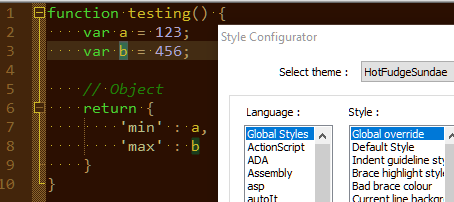
khaki
Highlighted variable is not prominent.
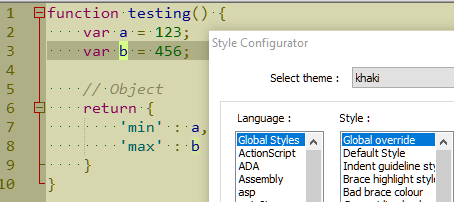
Mono Industrial
Whitish font.
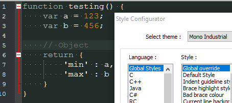
Monokai
The currently selected text range is not prominent at all.
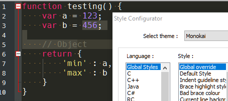
MossyLawn
Highlighted variable is not prominent.
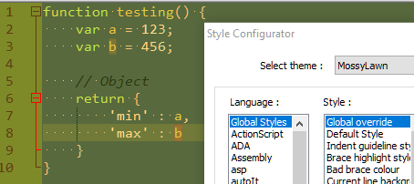
Obsidian
The currently selected text range is not prominent at all.
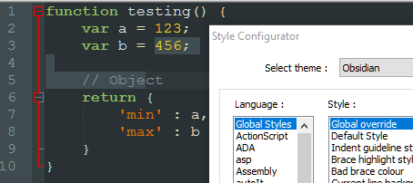
Plastic Code Wrap
The currently selected text range is not prominent at all.
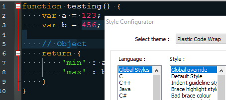
Ruby Blue
Highlighted variable is not prominent.
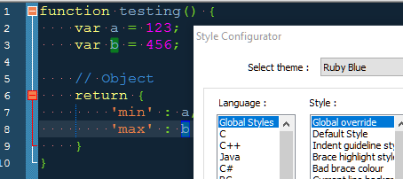
Solarized-light
Highlighted variable is very dark.
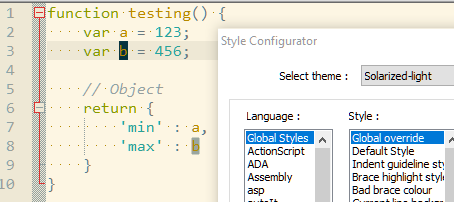
Solarized
Highlighted variable is not prominent.
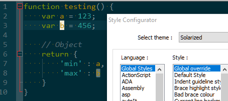
Twilight
The currently selected text range is not prominent at all.
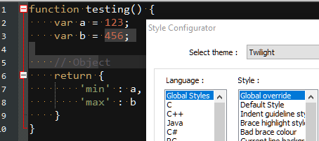
Vibrant Ink
Highlighted variable is not prominent.
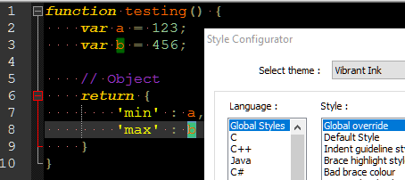
vim Dark Blue
Too blue.
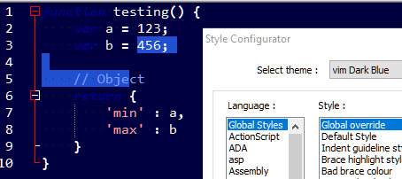
Zenburn
Highlighted variable is not prominent.
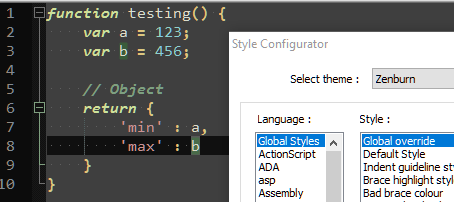
Currently, Deep Black, Navajo works fine to me.
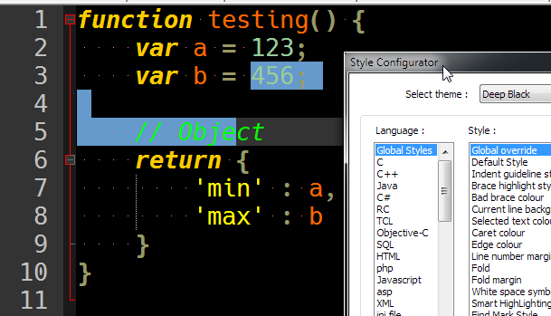
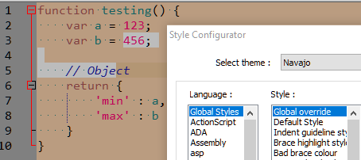
and this is my testing source code
function testing() { var a = 123; var b = 456; // Object return { 'min' : a, 'max' : b } }
6.3. Best font¶
monospace:
-
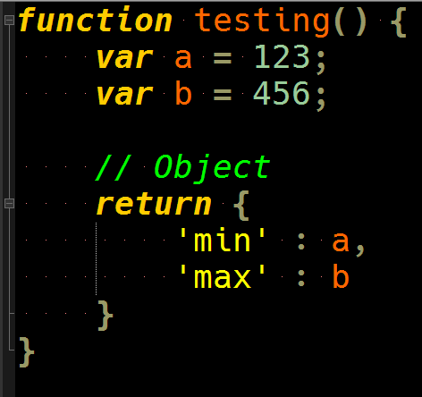
Consolas
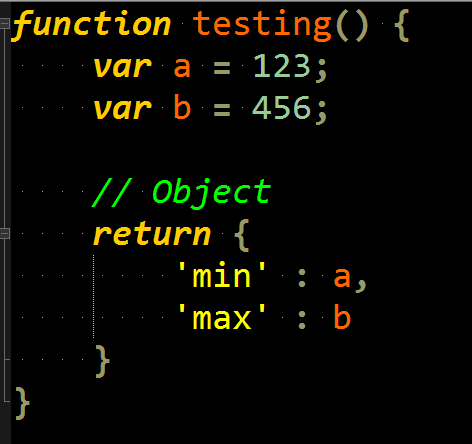
Lucida Sans Typewrite
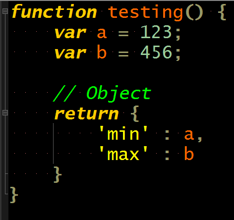
Courier New
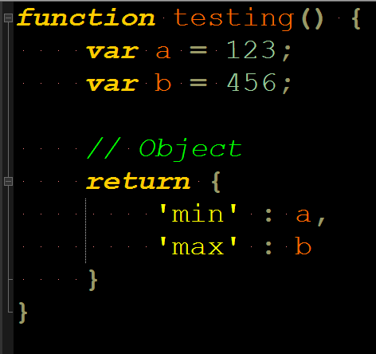
Source Code Pro Semibold (Google Fonts)
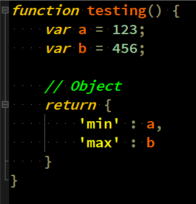
-
not monospace:
MV Boli
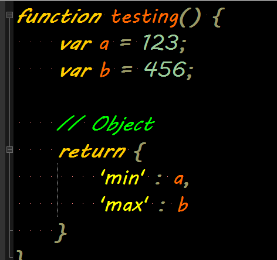
On a related note,
here is the Microsoft Excel filethat I use to research about what font that is compatible between Microsoft Excel in Windows 7 versus Microsoft Excel in Android.: . No problem found so far as of 25 June 2016 (Saturday) 12:24:55 PM GMT+08:00Microsoft Excel in Windows 7
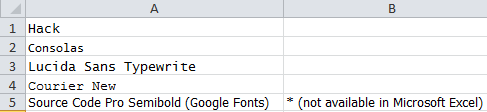
Microsoft Excel in Android
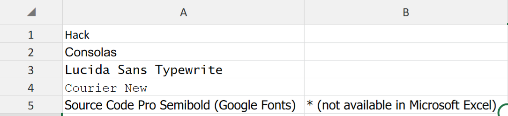